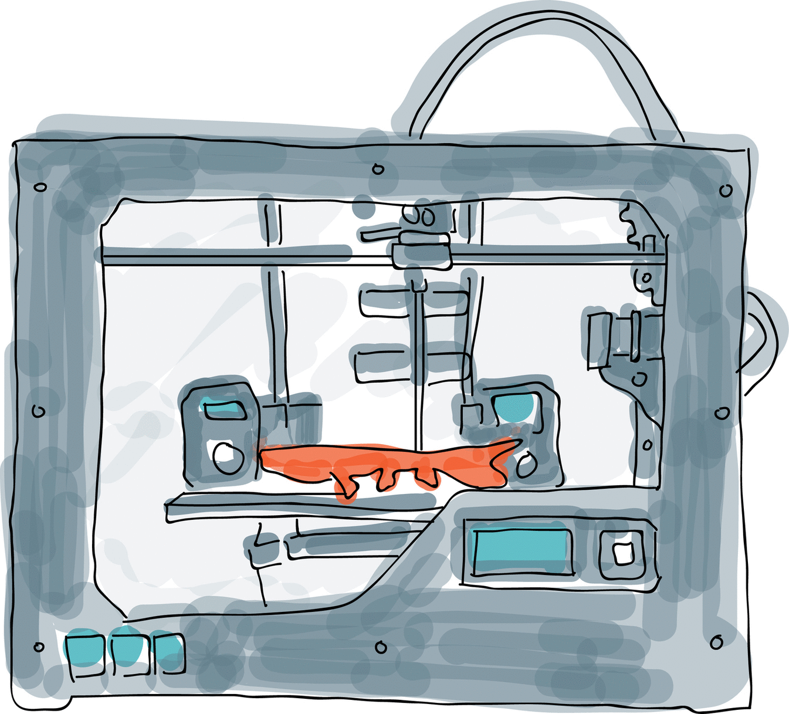

Future
Localized production for consumer and industrial goods:
3D printing will lead to a localized commercial production where
people will be able to 3D print almost anything at home including
various consumer goods. This will make it much more affordable,
convenient and efficient thereby satisfying household needs.
It will soon be possible for several digital 3D printing factories
of different sizes and capacities to be connected in a global production
network. The capacity to print consumer goods at home will cut down on
the inventory shipping costs and this might disrupt the supply chain
drastically.
Custom production materials:
Doctors are currently using the technique of 3D printing to create
knee replacements for each patient. Soon, they might be able to print
live tissue and the material might itself contain pain medications and
antibiotics. 3D printing experiments are underway where Graphene,
a material 100 times stronger than steel but flexible and transparent,
is tested. Human cells like the stem cells can be printed into complex
functional living tissues. 3D bioprinting has the potential to re-shape
the healthcare industry.
Nano printing:
There exists a 3D printed lithium ion battery that works like a normal
battery but is the size of a single sand grain. These can be used to
power miniature robots, compact electronics and tiny medical devices as
well. 3D Nanoprinting makes rapid prototyping of micro, nano structures
possible.
Goal directed design:
Unlimited complexity in materials and geometry can be
achieved in 3D printing. Imagine a computer that automatically
generates thousands and thousands of variations of a particular
design until a particular problem is solved. This refers to goal
directed designing where the designer starts with specific objectives
for factors like strength, weight and durability. The computer
would then generate hundreds of design possibilities, evaluating
and recommending the best designs for specific objectives.
4D printing:
How about printing a 3D object in such a way that at a future point,
it automatically alters itself or self assembles with change in the
environment like moisture or temperature. Imagine a construction brick
that only reaches its full weight and structure after water is added to
it, at the exact location where it will be used. Envision hydraulic
pipes that automatically repair themselves if they are ever damaged.
Get ready to wear sneakers that become running shoes if you started
running, or grow cleats if you walk on grass, or become waterproof
if it starts to rain. While this technology is still new, it promises
to take 3D printing to an entirely new dimension.